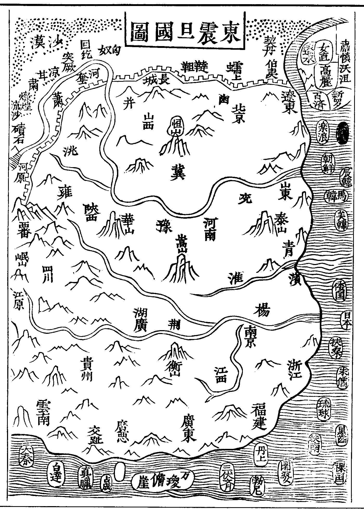
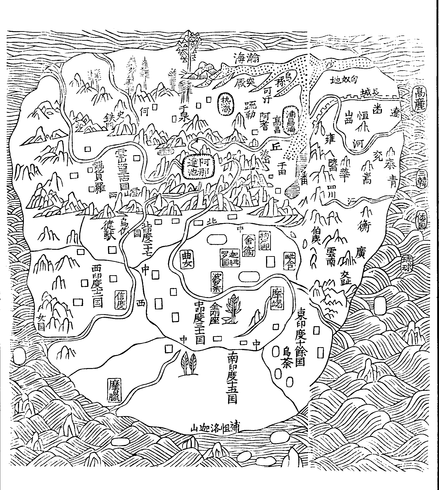
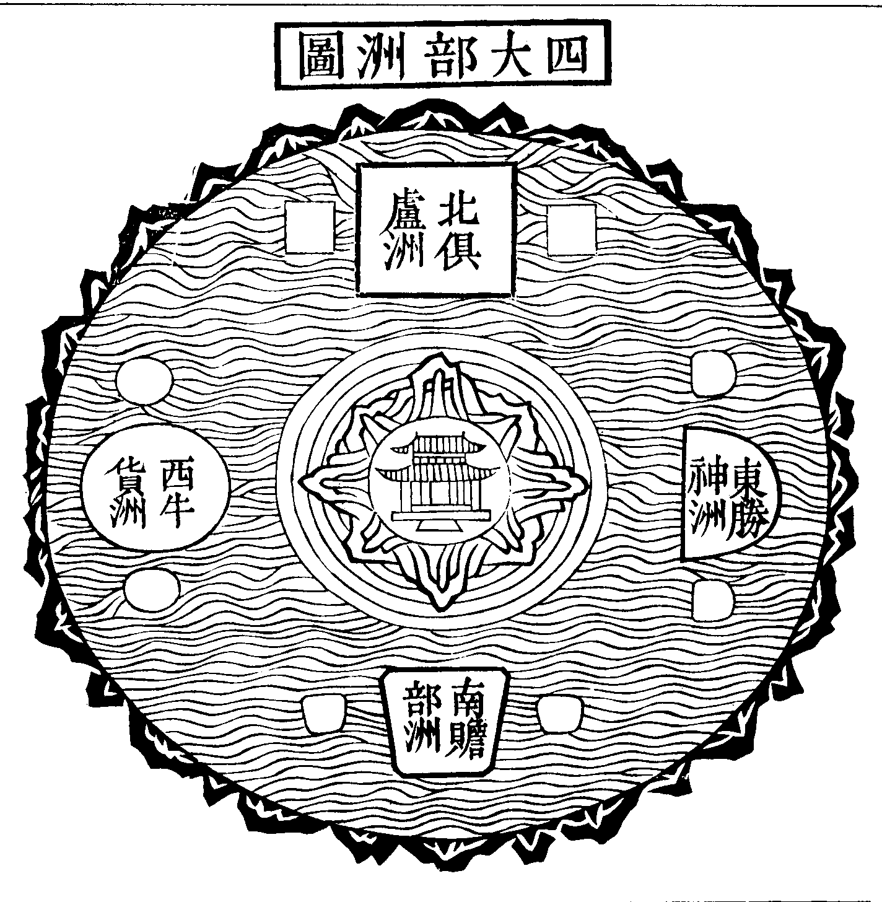
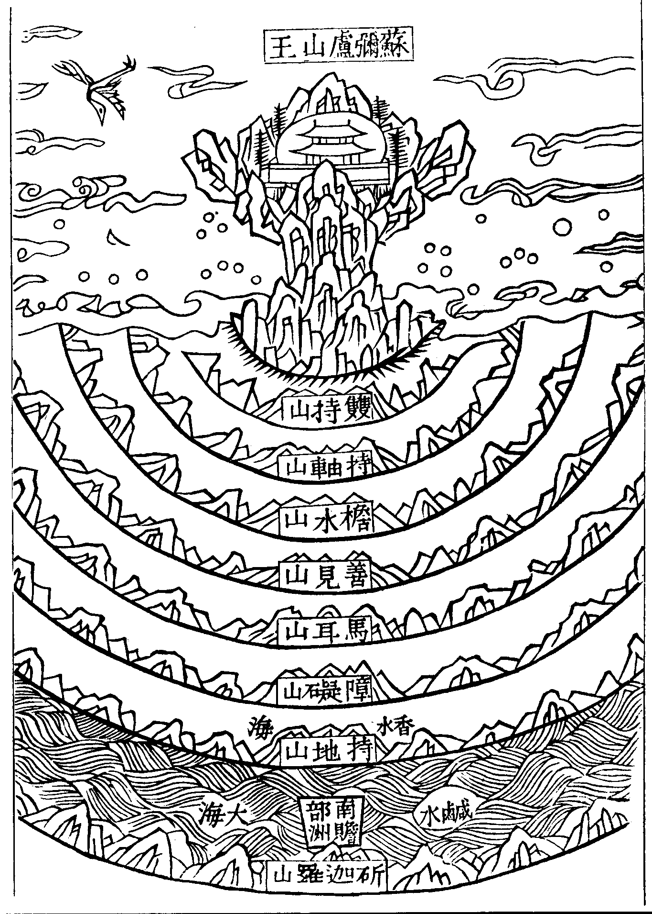
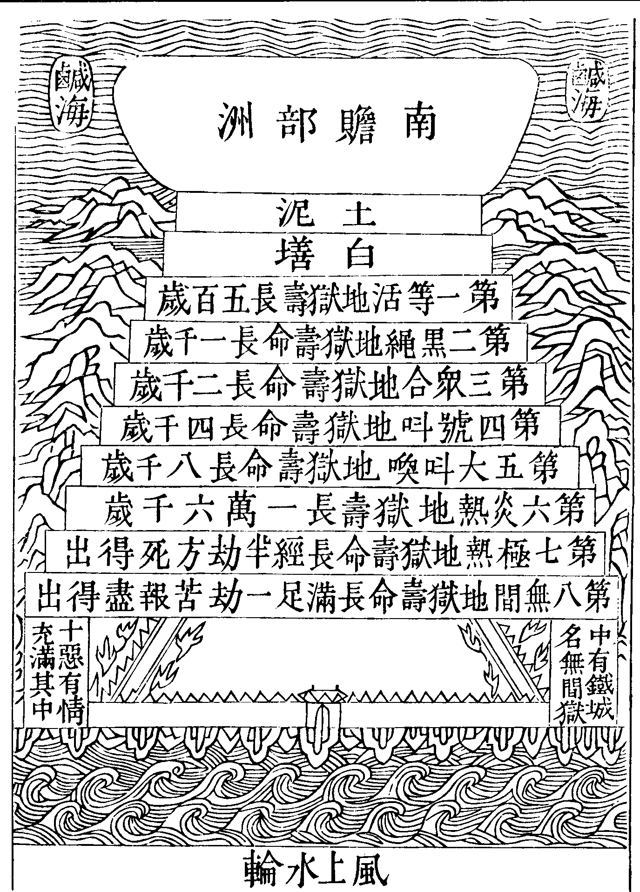
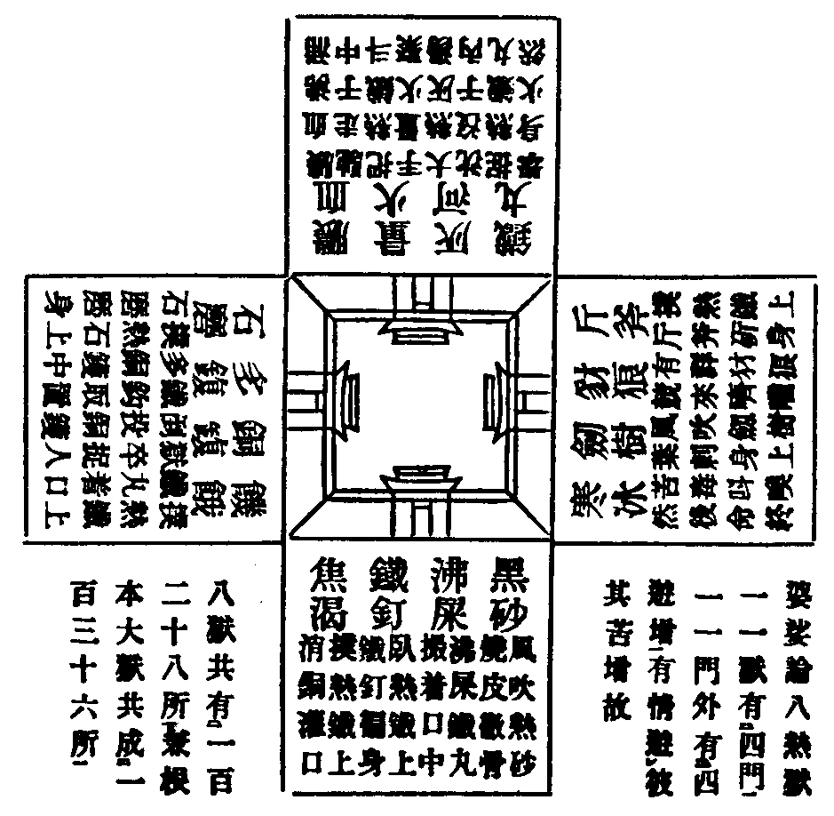
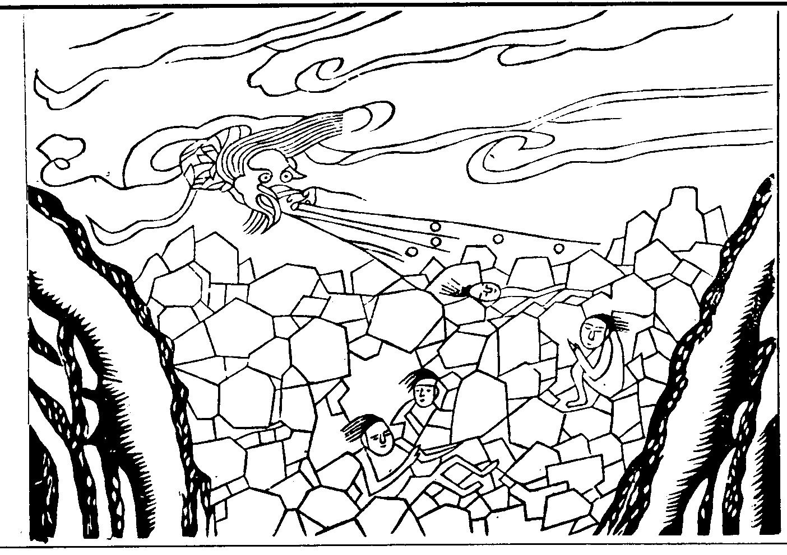

卍新纂大日本續藏經 第57冊
No.972 法界安立圖 (3卷)
【明 仁潮錄】
第 1 卷
聞夫四徵未具本無臭以無聲二儀攸分遂有形而有象形質既立依正斯分于是十方世界而棋布星羅六道含靈而塵紛蟻聚有名有體孰能盡見盡知有種有因難以窮其繇始況復神機吐納業運遷訛出沒無方化化無際者乎非夫至聖至神大覺玄鑒惡能[狂-王+方]狒其涯岸哉致使凡庸闇識耳聾瞽而不知世智辨聰封己見而莫信所以道岸轉遙真源難復更有愚癡邪說執理迷事受一非餘撥無佛土耽空為道墮莽蕩之深坑妙有不弘損人天之福德適越之燕求升返墜雖智愚有間昧道何殊葢不明乎因果凡聖故也夫因果者自心之影嚮耳因果明則操脩之具可知也凡聖者迷悟之分位耳凡聖明則升進之功可期也法界者乃聖凡之依報猶人之屋廬也皆從心變心造非是無因無緣是故剎海無邊攝歸毫末橫該竪徹總會心源如是知為真知不爾非真知也知見既正則信入無疑趨向有堦聖凡不濫聞熏觀達至於洞融方能空有無礙真俗圓通福智兩嚴大通自在方為究竟然歸源無二方便多門今此集中略明有門謂人天世界凡聖因果皆是實有非寓言假設若夫空空妙理無我無人絕修絕證生佛一如之奧義自有八部般若諸大經論在竊以通都大郡有大藏有明哲處加此則為骿贅但山陬海曲窮年不聞正法頭白未謗因果者以此開發善信不無小益故彚集成言以為法施之助云爾。
萬曆丁未仲秋沙門仁潮集於天目蘭若
法界安立圖總目
總釋大意數一至七從凡至聖自近而遠通為一觀如入大海轉入轉深方知世界無邊眾生無數而真法界量亦無有盡然則離事無理離理無事性相不二體用同如總為法界一大緣起故經云終無心外境能與心為緣皆是自心生還與心為相以色大故般若大色清淨故般若清淨也。
法界安立圖別目卷上之上
題注
千里之程起于跬步將游法界發軫人間葢世界廣遠人莫能知故略示方隅初明一洲漸及遠大如增十為百積流成海也。
No. 972
法界安立圖卷上之上
一略明南洲
佛興緣
夫塵寰寥廓異趣紛綸織十惑之緻網覆五陰之重雲沈迷欲穽縈遶稠林薰蒸于畏宅之焰回旋于生死之輪加以業浪長漂去覺源而轉遠癡城危錮處永夜而難醒沙劫易過苦流無已是以六通至聖十智能仁被弘誓鎧運大悲輪不動真際而智周法界常住三昧而普現色身升慧日于幽關震法雷于夢宅演圓音而廣被灑甘露以均霑俾脫險途令登覺岸洎夫八相示成十天敷妙津梁九地舟輿四生雖真乘上智拯萬彚以興慈大誓甄陶任根緣而利益是則羣生以苦感為因如來以悲應為緣也。
賢劫緣
佛興利物時當賢劫何名賢劫謂大千世界初欲成時大水彌滿有千枝蓮華出現金光普照淨居天見乃曰希有此瑞當有千佛出興于世以是因緣遂以此劫號為賢劫釋迦牟尼如來乃賢劫第四佛我等之所師為娑婆之教主。
娑婆疆域
佛所王土號曰索訶世界古經翻為婆婆經中所謂忍土是也謂此土人強識力能忍苦樂堪任道器故佛王之案此封疆周輪鐵山山外是空空不可測山下是地地下是金金下是水水下是風其風堅密逾于金剛眾生心力同業所感能持世界不令傾墜自風以外即是虗空約此周輪從下而上至無色窮名為有頂論其盡界縱廣卒非里數之所度也依智論從色界下一大石經一萬八千三百八十二年方始至地約此上方名為一佛所王土也輪山內有百億四天下今初且明一四天下之南洲有二一震旦國東土震旦國區域之興帝嚳九州(冀兗青徐攝荊豫梁雍)舜十二州(以冀州土潤增置并幽營三州)夏禹平水土分別九州(揚荊豫青兗雍幽冀并)周大封建葢千八百國春秋之世見于經傳者百二十有四國下至戰國七雄并而為秦懲周封建之獘罷侯置守分天下為三十六郡及南平百越又。
東震旦國圖

置(閩中南海桂林象)四郡兩漢以十三州統治(漢武置十三部刺史)晉為十九州唐為十道後又為十五采訪使宋朝元豐頒行李德芻等所僎九域志分為二十三路漢盛時四履之地東樂浪西燉煌南日南北鴈門東西九千里南北萬三千里古長城戰國時趙築之自代竝陰山至高闕(二州名)以備胡燕亦築媯州之北至遼東秦始皇令蒙恬築長城起臨洮入高麗元為十八道至皇明一統置南北二直隸并十三省四瀆者河出磧石江出岷山淮出桐栢濟出王屋山五嶽泰(東)衡(南)華(西)恒(北)嵩(中)。
南贍部洲圖

仰尋諸佛之降靈也不可以形相求之隨機顯晦故得以言章述矣自法王示蹟照臨忍方羣生何幸仰茲陶誘使夫二十五有絕生死之因九十八使斷牽連之業竝超三界俱載一乘含育蒙大造之恩至人引勤勞之慮故有垂慈聖蹟布此靈儀令重昏動其玄機識浪靜其漂怒方為入道弘轍亦乃出有初門而事總冥權理符神運抑非天授諒實人謀但禎瑞氤氳嘉祥雜沓喗煥天地引燿幽明然則文物光乎萬古聲明高于視聽所以薄列鴻猷用觀弘範也案西域志云贍部中心名阿耨達池在香山南大雪山北周八百里(起世經雪山眾寶所成頂有四金峰中一高峯峯有龍池五十由旬)十地菩薩化為龍王于中潛宅出清冷水以給贍部池之東面銀牛口流出兢伽河(即恒河)遶池一帀入東南海池南面金象口流出信度河遶池一帀入西南海池西面琉璃馬口流出縛芻河遶池一帀入西北海池北面頗胝師子口流出徙多河遶池一帀入東北海(或曰潛流地下出積右山為東華黃河之原)葱嶺當贍部之中南接大雪山北至熱海千泉西至活國東至烏殺國四方各數千里崖嶺數百重冰雪風寒山阜葱翠故名葱嶺自葱嶺東近高昌國曰阿耆尼(漢書焉耆有伽藍十數)西南屈支(舊曰龜茲伽藍百所)葱嶺之北四百里曰清池(亦名熱海)西行千里曰千泉南有小雪山(突厥避暑之處)西至呾羅私乃至史國東南入鐵門南出至覩貨羅(東至葱嶺南至雪山西至波斯北據鐵門有三十國)逾諸國至縛曷北臨縛芻河(伽藍百所人謂之小王舍城)從此西南逾諸國東南入大雪山(山阿有龍洞佛化其龍留影于洞唐玄奘親往禮拜遠望則金色炳著近則不覩漸隱沒)次至梵衍那國(有臥佛長千丈商那尊者胎生無條衣尚存)東逾黑嶺至迦畢試國(北背雪山伽藍百所)東入北印度境至健馱羅國(有大塔高五百尺魏胡太后遣使持長幡五百尺挂之脚方及地此塔與洛陽伽藍記同一時當有二塔)北至烏仗那國(釋種被斥王此古輪王之苑僧常萬人)南渡信度河踰諸國東南至迦溼彌羅國(伽藍百所)踰諸國東北至末兔羅國(毱多度人籌盈石室)東北至室伐羅次至窣祿那(東臨恒河)東渡河至末底羅東去北雪山邊有金氏國(女為王不知政事此東去接吐番北接于闐西接末羅婆)自末底羅東南至醯呾國(佛為文鱗龍王說法之處)南渡兢伽河(河左有塔千座)東南至劫比它國(佛在忉利為母說法帝釋現三道寶階之處)西北至曲女國(戒日王設大會令玄奘立真比量論義處)東北至舍衛國(城南五里有祇樹給孤園)東南至迦毗羅國(佛降生處淨飯王殿摩邪夫人殿菩薩降胎處殿佛成道後還本國度八王子釋種處)東北至拘尸那國(娑羅雙樹林佛入涅槃處)西南至波羅柰國(鹿苑轉法輪處近苑有支那寺國王為眾僧造支那此云大唐)順兢伽河東北至毗邪離國(舊名毗舍離有維摩丈室縱廣十尺)東北至弗栗恃(北印土境)西北至尼波羅(此國北境即東女國與吐蕃接命使往還率由此地唐梵相去萬里自古取道迂遠此國有池水面火起中有火龍)自毗邪離南渡兢伽河至摩竭提國(或摩伽陀中印有王舍城西南渡尼連河伽邪城城西六里伽邪山俗呼靈山西南菩提樹樹高五丈佛成道處周垣五百步中有金剛座千佛坐之入金剛定那闌陀寺五王共造僧徒數千并俊才高學國東南雞足山迦葉入定處東北靈鷲山王舍城有熱泉涌出目連云此水經過小地獄來故熱沸而垢濁有三深井大水不滿謗佛生陷處)東北踰諸國至奔那伐(自信度河東至此皆中印)次東至迦摩縷(東印從此東去山阜連接可兩月行至蜀西南界)南至三摩怛(東北海濱)西南乃至烏荼國(東南臨海有城海商止處南去執師子國二萬里夜望其國佛牙塔寶珠光如大炬)踰諸國西北至憍薩羅(中印有王引正為龍猛造寺集千僧計工人食鹽價田九億金錢)國南有山(山崖之上石閣五層層有四院飛泉流注)踰諸國南至末羅矩(南印濱南海有末剌邪山出龍腦香樹香如氷雪此山之東有布呾洛迦山山頂有池池側石天宮觀自在菩薩遊舍于此有願見者厲水登山)東南海有執師子國(北印土境有佛牙精舍上建表柱置大寶珠夜望如明星王宮側建大厨日營萬八千僧食常興此供不絕)南數千里有那羅稽羅洲(人長三尺為鳥喙食椰子肉此洲東南有棱伽山)自達羅毗至北恭達補(南印土有貝多羅樹林周三十里其葉長廣色光潤五印書寫莫不采用今貝葉乃略名)林西二千里至摩訶剌國(東大山有寺羅漢造舍高百尺石佛高七丈上有石葢七重懸空相去各三尺傳云羅漢願力或云神力或藥術之力云)西方至摩臘婆(五印之境有此國及摩竭提重學名僧甚勝國南至海)西北踰諸國至瞿折羅(西印土境)渡信度河至信度國西以至狼揭羅(臨西海海島中有西女國)北踰諸國至迦畢試界(東臨北印西至弗林波斯國)其餘諸國風物茲不具錄如西域志釋迦方譜可備悉之○印度(此云月以居諸國之中如星中月此西域之正名天竺身毒訛稱也)北背雪山三垂大海地形南狹如月上弦川平地廣周九萬里七千餘城依止其中盡三海際一王所治(漢書云其國殷平和氣靈智所降賢懿挺生神跡詭怪理絕人區靈應明顯事出天外)光明云八萬四千城邑聚落仁王經十六大國五百中國十萬小國楞嚴云此閻浮提大國二千三百樓炭經葱河以東名為震旦(唐彥琮法師云葱嶺已西竝屬梵種鐵門之左皆曰胡鄉)。
別胡梵
南洲一地大約五分中分為雪山葱嶺南分為五印度乃昔金輪聖王之所治是梵天之種世稱其國名天方亦名婆羅門國(此云淨行淨志)西分為覩貨羅波斯諸國西夷所居北分為胡虜之鄉突厥可汗烏孫匈奴所居東分為二其沙河以西有胡人吐蕃所居積石之東為震旦國乃帝王所化是君子之國封域分殊應須甄別不當以梵為胡而自混濫有以天竺為胡國者斯言大誤又有稱胡經胡語等皆非正言當云梵經梵語可也。
論中
夫法王利見未隔中邊適化無方豈專形教雖大雲普澤而敗種難榮晨旭高暉而覆盆不照致使疑信相半邪正交陳而大悲之光曾無間然也或曰華夏得天地之中九州之外皆邊夷耳斯不足辯觀西域圖可知今為未知者更復明之考諸經論其義有九。
一名聞
本行經云護明菩薩謂天人金團曰往昔補處菩薩託生之家須具六十種功德三代清淨汝下閻浮為我觀察金團曰迦毗羅城王名淨飯夫人名摩邪于諸世間具足功德清淨有大名稱堪生彼家護明曰善吾定生彼如是佛自親選諸天共聞則知迦毗羅國名聞最勝為諸國之中(普曜經亦同)。
二里分
大地廣博世莫能窮右今無人至西北海者況知地之中邪世俗謂中國者自論此方之中耳非天下之中也依周公測天地定豫州為中云四邊各五千里(豫至東海無五千里之西之北不知其幾萬里而云五千里邪)禹貢言各二千五百里當時地狹後漸開濶至漢方可九千里今又較濶依內經大地周二十八萬里徑九萬里若以東西九萬里畫為九分則華方在極東一分之間耳西去更有八分之地天竺在五分之中東西去海各四萬五千里當知我國是大地之東天竺為大地之中明矣。
三山王
天下諸山皆自崑崙發脉而來最極高廣羣峯拱峙周萬餘里龍神所宅非人力可登其枝條分布為眾山之原雖屈伸睽顧起伏萬狀而根脉相連如竹園然或近出兩笋伏地行鞭至遠處又出兩笋崑崙左邊分數支其一支走東度流沙磧石迤[這-言+里]發為震旦諸山一支走東南發起東印度諸山次東又為百夷諸山右邊分數支一支走西南生起西印度諸山一支走西為活國波斯諸山前面為黑山雪山及北印諸山至中印多伏少出後面為葱嶺生出北胡等山眾山飛走其下高聳眾峯之上崑崙居大地之中五印度在崑崙之南(俗書以雪山東支名崑崙山借名也)。
四水源
水之為物其性趨下莫不本出于山而末入于海也雪山之頂有大龍池周千餘里為天下諸河之總源從池四面各出一大河河濶四十里波濤澒涌趨于四方各與五百河俱流入于海池東之水皆向東流池西之水皆向西流池南之水皆向南流池北之水皆向北流四隅亦爾葢地形如團瓢其頂即雪山在極高處四面漸下故爾震旦諸水皆東流者以居地之東隅也是知山當地中池居山頂此池為大地水源之中中印度正與龍池相對。
五地臍
梵網經云釋迦牟尼佛于寂滅道場坐金剛華光王座正法念處經云一切世間閻浮提國悉無此座金剛座處八萬四千由旬佛坐此座得佛菩提餘地不能持佛西域志云中印度恒河南摩竭提國國西南渡尼連禪河十里有菩提樹樹下有金剛座千佛坐之入金剛定俱舍論云此座下連金輪故名金剛座三世諸佛皆于此座成道降魔故知金剛座是地之臍。
六輪王
人有勝德必居勝地夫金輪王者為閻浮人中福德之最勝者也諸人王中皇帝之聖神者也故有金輪表瑞七寶呈祥相好莊嚴千子圍遶御龍馬而飛空四洲粟王望德而歸化故輪王出世必生中土其中土者即中印度也歷代輪王出興之處名殊勝者以此。
七梵字
梵字猶古篆也自開闢來即有其文歷萬萬餘年古今不易不同此方文字篆隸遷訛元從梵天傳來故曰梵書金銀輪王遞相承用故書梵字處妖魅遠離唱梵音時鬼神敬畏葢天帝之玉音孰敢不敬奉哉是以諸佛說法皆用梵音天龍八部遵奉流行以至呼天天應召蟲蟲馴通幽徹明至靈至神者其惟梵音乎詮梵音者是為梵字總持經中明諸利益如存阿字而入定觀字輪而明心唵字出供可以上獻諸佛紇哩舒光可以下拔群苦能令染者淨愚者智夭者壽病者痊摧邪輔正饒益群生者其惟梵書之用乎世間文字有六十四種第一梵書第二佉樓書乃至蓮華樹葉右旋擲轉至六十四書名一切種音六十四種書中梵書為第一故知梵書為文字之王。
八氣和
塞暑之宜隨方起用葢地有隆卑氣有燥溼故涼燠不同夫氣得其中則和失其中則戾矣所以極南蒸熱極北苦寒濵海風溼蠻山瘴癘土有沃壤火沙水有瘂泉苦井者非得氣之偏乎至如印度之方夏不太熱冬不嚴寒四序溫和五塵佳妙迦毗奇色之天華(唐玄奘至中印見奇異天華采種而東歸渡河遭風其華種盡失疑龍所奪去)解谷正音之律竹(漢志黃帝使伶倫徃昆侖之陰解谷取竹斷兩節間而吹之為黃鍾之宮制十二筩聽鳳鳴雄鳴六雌鳴六此黃鍾之宮皆可生之是為律本至治之世天地之氣合以生風天地之風氣正十二律定)以至藥王之樹(雪山有藥王樹嗅者甞者觸者諸病皆痊)肥膩香草(雪山生此草牛食之乳為醍醐糞如檀香之氣)地中甜味(雪山地中有甜味潛流理筩可取斯亦醴泉之類)龍池甘藕(佛世有比丘病一比丘往雪山乞藕龍施之藕徑尺味甘食之病愈)良以天地之氣和故所生草木亦純粹也(邵子曰天有至粹地有至精人類得之則為明哲草木得之則為芝蘭)。
九道中
名以表實事以顯理故有中土者必有中道存焉耳若夫有中土而無中道者與邊地何殊乎是以華夏聖賢言道育民以中為本曰允執厥中曰用其中于民曰中也者天下之大道也致中和天地位焉萬物育焉世聖尚爾況出世之大聖寧以偏邪之道而示于人邪所以正覺能仁生中土現勝相者(生王宮具三十二相)將非以中道之正法而啟悟群生者乎然而毛道凡夫棄本逐末未有聖智曰知曰見皆是迷倒遂使好同者則惡異賓此者則辭彼故是非以生惑倒以縈愛憎相形邪正相傾而罪福已成矣故我正覺聖人愍而諭之調而和之乳而藥之援而救之俾夫止紛競歸太寧捨狂妄復良誠以合乎大均以契乎本真以至于至公至純至神至妙至中之道而後已原夫群生機異執見不同或執于色或執于空執色者窒執空者流正覺示以藥言曰色即是空空即是色則色空不二為中或執為同或執為異同則儱侗異則紛紜藥言曰同者同異異者異同非同非異一觀為中或執諸法為實為虗為常為斷為大為小為徧不徧為自為他有邊無邊或即或離或欣或厭亦有亦無亦恒亦變來者去者語者默者勤者怠者清者和者讚者毀者如是等各執異見一一成偏多岐亡羊流而忘返正覺者諭之曰萬法本閑而人自閙空實無華瞖者妄見人波鬼火水性無殊猿猴捉月癡狗逐塊演若迷頭馳走東西狂性自歇歇即菩提又曰譬如船師不住此岸不住彼岸而運渡眾生至于彼岸曰學道如牧牛執杖視之勿令東西犯他苗稼如御馬執轡在手惰則策之逸則制之從容乎中道而行矣如陶師調泥不殭不軟方中輪繩可作盆瓶如琴師調弦不緩不急方可奏曲適其中而道可期矣夫受病異緣施藥多方故有事中有理中有俗中有真中有漸中有頓中有小中有大中有初中有終中有至中有圓中有中戒有中定有中慧有中觀有中行有中因有中果若摩尼之應色空谷而答響矣以至飲食衣服行住坐臥大小諸事自行化他靡不示之以中佛自日中一食令諸比丘過中不食食之不飢不飽衣制三衣不奢不裸行則直行坐則趺坐調身則不寬不急調息則不澀不滑調心則不沈不掉至于沈浮兩捨惺寂雙流不出不入寂而常照照而常寂心心無間中中流入中道之海洎乎中之至也亡違順等怨親泯同異一死生齊物我通古今混虗空為一體現山海于毛端一語一默一動一靜而普饒益與眾生夫如是則豈其所謂世智之狂解無想之癡禪邪來從中來故曰如來去從中去故曰如去(即善逝也)中非動是誰來中非靜是誰去非動非靜無來無去者其至人之蘊乎非動靜而動靜無來去而來去者其悲雲之妙乎無來而來雖生不有無去而去雖滅不無是故如來之道不可以動靜來去有無生滅而言也是則超諸數量絕諸對待不可思議至玄絕妙之道歟世有河邊居人不信海水味鹹有海翁取一勺以示之使知鹹味耳豈曰大海可勺而盡之哉。
論僊道
僊遷也人之形神能遷而不死者也世俗言僊有幾等不同有天僊神僊人僊地僊鬼僊或遊人間或隱深山(如天台匡廬鼓山終南等)或居海島(如逢萊瀛洲闐苑小有等山島)或在地下(昔人遊地穴見九舘諸僊人)皆長年不死古人曾見故世多羨慕世人惡短夭愛長壽凡見百歲餘者已呼為僊況千萬歲者不知彼亦有無常但壽長耳非永不死也比人為優比天為劣天人壽長多經劫數視彼僊人壽短等如蜉蝣耳僊道雖妙固不如天人天人雖優又安得如聖人超數量契常樂永不為生死之所僊而億劫常存者乎。
華嚴云神僊山中五通僊人充滿其中(此居七金山中乃天僊也)楞嚴經佛言復有從人不依正覺修三摩地別修妄念存想固形遊于山林人不及處有十種僊彼諸眾生
是等皆于人中鍊心不修正覺別得生理壽千萬歲休止深山或大海島絕于人境斯亦輪回妄想流轉不修三昧(正定也)報盡還來散入諸趣龍舒居士曰楞嚴經說有十類僊壽千萬歲休止深山數盡復入輪回為不了真性與六道眾生同名七趣世之學僊者萬不得一縱使得之不免輪回為著于形神不能捨去故也且形神者乃真性中所現之妄想皆非真實欲求長生莫如淨土不知修此而學神僊是捨目前之美玉而求不可得之碔砆豈不惑哉。
唐香山居士贈王山人詩曰聞君減寢食日聽神僊說暗待非常人潛求長生訣言長本對短未離生死轍假使得長生才能勝夭折松樹千年朽槿華一日歇畢竟同虗空何須誇歲月彭殤徒自異生死終無別不如學無生無生即無滅。
斷疑生信
不信曰疑萬惑之所從生也不疑曰信萬善之所從出也信為入道之通衢疑為修行之大障信如風舟順水則千里可期疑如波浪洄漩則終朝尋內故經云醫王能治一切病不能治命盡之人佛能度一切眾生不能度一切不信之人故知學道以信為初如沃壤良田所種五穀必滋長也世人不信其疑有三一曰此天地日月外云何復有天地日月二曰人死形壞氣散云何神有升沈苦樂三曰不信人可成佛以謂我耳目所不及遂疑而不信矣譬之朔北人不信萬斛舟而賈客每乘之江南人不信千人帳而胡人日居之凡人不信寶嚴剎而聖人每遊處之寧曰我目所不見遂果無有乎佛具六通有天眼宿命明見洞徹十方世界無所不覩六道升沈一一遍知故以神道設教因緣示人令離苦趨樂修心練性以至于成佛佛者覺也即人人之真心本覺之性也眾生昧此而不覺如處長夜能仁朝徹悟證本真故號大覺裴相國云終日圓覺而未甞圓覺者凡夫也具足圓覺而住持圓覺者如來也是故釋迦成道中天說有說空觀根逗教截苦之根源入道之要路俾趨吾之所趨吾之所趨者非六道非三乘乃如來正覺之趨也故曰自覺覺他覺行圓滿故名為佛然則世之儒教聖人豈不明明德而新民乎龍舒王居士曰釋氏之所以孳孳訓世者無非戒惡勸善而吾儒何甞不戒惡勸善哉其理未甞不同也其不同者惟儒家止于世間法釋氏又有出世間法儒家止于世間法故獨言一世而歸之于天釋氏又有出世間法故知累世而見眾生業緣之本末此其所不同耳然則佛之所言不可以目前所不見而不信也況佛戒人妄語必不自妄語以誑人世間中人以上猶不肯妄語以喪其行止況佛乎其言可信無足疑者先賢云佛言不信何言可信夫神者我也形者我所舍也我有去來故舍有成壞然則生者非生也以神之來而形成耳死者非死也以神之去而形壞耳世之人不識其神徒見其形乃悅生惡死可不為悲乎且神之來也何自而來哉葢隨業緣而來神之去也何自而去哉葢隨業緣而去業緣者何哉其所作者人間之業神則隨之而生于人間所作者天上之業神則隨之而生于天上若作阿修羅之業神則隨之生于阿修羅若作三惡道之業神則隨之生于三惡道是輪回六趣無有出期然則神者自無始以來投胎易殻不得久留于一所所以然者何哉以吾所造之業非久而不盡者故神之舍于業也業盡則形壞形壞則神無所舍又隨吾今世所造之業而往矣譬如人造屋宇必居其中人造飲食必享其味故造如是業必受如是之報葢自然之理也然則吾今世之所為可不慎哉(注世人多執神隨形滅無有後報苦樂事故龍舒云形有壞神不滅爾此治病藥言也幸勿謬計而起邪見執藥成病)。
法界安立圖卷上之上
法界安立圖卷上之下
二廣步大地
(廣步大地者前來雖明一洲稍開封滯尚未盡大地不知海外四洲須彌皆在地也故次明之)。
四大部洲圖

須彌山王之外有七重金山七重香水海次第周帀七金山外大鹹水海中有四大洲八中洲及數萬小洲徧布安住鹹水海外有小輪圍山周帀圍遶此四洲等皆一地所持是為一世界輿地之圖也。
四大洲者依長阿含經云須彌山南有天下名閻浮提(此云勝金洲新婆沙論名贍部洲)其土南狹北廣縱廣七千由旬人面像此地形有大樹名閻浮圍七由旬高百由旬枝葉四布五十由旬人壽百歲少出多減中夭者多阿毗曇論云南洲衣服莊飾種種不同一生欲事無數亦有修行至死無欲者○起世經云大海北有閻浮樹樹下有閻浮那檀金聚高二十由旬(以此勝金出樹下因以名樹名洲)○順正理論云有二中洲一遮末羅(新媻沙羅剎住)二伐羅遮羅皆有人住(俗書蠃虫錄載諸國人形各異或是海中諸小洲也)。
長阿含云須彌東有天下名弗于逮(此云勝身立世云弗媻提)其土東狹西廣形如半月縱廣九千由旬人面像之有大樹王名伽藍浮圍七由旬枝葉四布五十由旬高百由旬人壽二百歲(樓炭經三百歲)飯食魚肉以穀帛珠璣共相市易有嫁娶禮○阿毗曇云東弗媻提人多欲者一生數至六七亦有修行至死無欲者食自死魚肉自不殺生頭髮剪前披後著下衣竟上衣繞○順正理論云有二中洲一提訶二毗提訶皆有人住。
長阿含云須彌西有天下名俱耶尼(此云牛貨媻沙云瞿陀尼)其土形如滿月人面像之縱廣八千由旬有樹王名斤提圍七由旬高百由旬枝葉四布五十由旬人壽三百歲以牛馬珠玉共相市易○阿毗曇云彼土食肉殺生人死燒屍或置水埋土嫁娶同南洲人多欲者至十或十二亦有無欲者莊飾皆披髮上下著衣○順正理論云有二中洲一舍搋一怛里拏皆有人住○起世論斤提樹下有一石牛高一由旬因名瞿陀尼因以名洲。
長阿含云須彌北有天下名鬱單越(此云最勝媻沙云俱盧洲)其形正方人面像之縱廣一萬由旬有樹王名菴媻羅圍七由旬高百由旬枝葉四布五十由旬人壽千歲無有市易持生自活無我我所諸山浴池華果豐茂眾鳥和鳴四面有阿耨達池出四大河無有溝坑荊棘蚊虻毒蟲自然粳米(自生也)眾味具足以焰光摩尼珠置自然(燒也)釜鍑下飯熟光滅有曲躬樹其葉密緻天雨不漏男女宿下香樹果熟自然裂出種種衣或器或食河中寶船乘之娛樂入中浴時脫衣岸上乘船渡水遇衣便著不求本衣至香樹取樂和弦而行無有諸病形貌皆同髮紺青色齊眉而止人起欲心時熟視女人彼女隨詣園林若彼女人是父母中表之親不應行欲者樹不曲蔭各自散去若非親應爾者樹則曲覆其身隨意娛樂一日七日乃捨去懷妊七八日便生隨生男女置四道中行人出指含嗽出乳充徧兒身過七日已其兒長大男向男眾女向女眾命終不泣(以人壽定滿千歲故死而不弔)莊嚴置四道中有鳥名憂慰禪伽接置他方(立世云其鳥啄屍至山外噉之起世經云人死有鳥銜其髮置佗方世界)其地柔軟隨足隱起大小便時地開坼利已還合乃前世修十善行生此洲命終生天善處○阿毗曇云人多欲者一生數至四五亦有無欲者○順正理云有二中洲一矩拉媻二憍拉媻皆有人住。
起世經云南洲人身長三肘半東西同量(少肘量)北洲七肘○阿毗曇云南洲身長三肘半或四肘東洲八肘西洲十六肘北洲三十二肘(一肘當周尺一尺八寸)。
正法念處經云北洲人于山障外徹見無礙耳之所聞若遠若近若大若小而皆得聞東洲人于黑暗中亦見眾色耳識所緣盡一箭道西洲人眼識所緣山壁無礙眼識亦能聞聲如閻浮提蚖蛇之類眼中聞聲瞿陀尼人亦復如是如隔障礙聞眾音聲見眾色像亦復如是(此言三洲報通故能洞視徹聽也南洲則隔窓紙不見外物隔障不能聞聲故不爾此槩言之南洲亦有通者如清稟禪師宴坐聞曳木聲曰勿令損階侍者不見有曳木者細視之見群蟻曳蜻蜓翼緣階而上斯亦靜極光通之謂也龍樹嗅丸而知藥品各若干分圖澄數千里見火燒城梵僧眠聞虱號而惺世人亦有明察秋毫聰聞蟻鬬者)。
楞嚴經云阿那律陀無目而見跋難陀龍無耳而聽兢伽神女非鼻聞香驕梵鉢提異舌知味舜若多神無身覺觸摩訶迦葉無意而知(此皆不假六根而知六塵者比有根而知者又妙也或修得或報得經因業緣若湛流妄復圓常則真明通洞六根互用妙中又妙者也)。
媻沙論云四大洲八中洲人形短小復有五百小洲或人住或非人住或有空者(非人鬼也此胎生者化生者徧諸處)。
因本經云閻浮五種勝三天下及至他化一勇徤二正念三佛出世處四是修業地五行梵行處諸天及三天下各有三種勝閻浮一長壽二色勝三地勝。
阿含經云南洲三事勝一勇猛強記能造業行二勤修梵行三佛出其土○分別功德論云媻拘羅尊者長壽第一于百壽中而加六十阿難問曰尊者長壽何以不生三方答曰諸佛不生三方以其土人難化故此土眾生利根捷疾極惡勇猛取道不難是故往古諸佛皆生此中(經論相較南洲勝者以道三洲勝者以福然北洲福樂最勝經名為難者何邪以其雖有痴痴富樂倀倀修論無有智慧不能增修道業佛不生其土故不聞正法因名為難即八難之一也南洲有佛出世大椉根器多生其中以尊命短促眾苦逼迫怖畏發心勤修道行有益當來故為四洲之勝也)。
業因
四教儀云在因行五常五戒中品十善感人道身(或作福時有正助敬慢喜怒專略多少不同故受報時亦有中邊貴賤妍媸精粗豐儉之不等耳)。
阿含經云波斯匿王白佛為媻羅門還生自姓媻羅門家為復剎利鞞舍首陀羅家邪佛言何得如是當知有四種人一從冥入冥謂有人生卑姓家若生旃陀羅家漁獵家及餘種種下賤工巧業家貧窮顦顇復作卑賤之業乃至為人作使是名冥處于此冥中復行身口意惡身壞命終當生惡處捨惡受惡故名從冥入冥二從冥入明謂有世人生卑姓家乃至為人作諸鄙業是名為冥于此冥中身口意善命終生天故名從冥入明三從明入冥謂生富貴之家聰明點慧是名為明于此明中身口意惡命終生惡趣故名從明入冥四從明入明謂生富樂之家是名為明于此明中身口意善命終生善趣受天化生是名從明入明(剎利王族也媻羅門淨志也鞞舍商賈也首陀羅農夫也旃陀羅屠膾也此印土賤貴之分冥惡也惡相愚痴昏昧之謂冥明善也善相聰明光朗之謂明三業惡則十惡具生惡處則三塗備三業善則十善具生善趣則三善道備言生天者略也謂因談善惡果通六趣皆自人道發軫者也)業報差別經佛言復有十業能令眾生得人趣報何等為十一者不殺二者不盜三者不邪婬四者不妄語五者不綺語六者不兩舌七者不惡口八者不貪九者不瞋十者不邪見于十善業缺漏不全以是十業得人趣報(此明總報)又自行殺生勸他令殺等業得短命報自不殺生勸他不殺等業得長命報自行偷盜勸他偷盜得少資生報自離偷盜勸他不盜得多資生報好打拍眾生惱亂尊賢得多病報不鞭打眾生瞻視病苦得少病報嫌恨惱他不敬尊長得醜陋報愛敬父母賢聖施衣掃塔得端正報不敬父母沙門師長輕懱下族得下族姓報敬事父母沙門師長遵受教誨得上族姓報不諮問智慧大德沙門顯說惡法得邪智報能問智慧沙門修習多聞得正智報于三寶淨戒人所不生殷重心施生邊地報于三寶梵行人邊殷重心施生中國值佛聞法報(略言別因別報詳具全經)華嚴云業有現受生受後受相(此即三報受報也現作現受現報也今作來生受生報也今作後後世報為後報也以因有強弱故報疾遲不一世人不知此以為無報應)。
捨報相
人死時身心昏昧如睡無夢極悶絕時明了意識必不現起六種轉識行相所緣必不能知是散有心名生死心(八識也)此時由善惡業下上身分冷觸漸起頌云頂聖眼生天人心餓鬼腹旁生膝葢離地獄脚板出(眼不見耳不聞五識先無心不知六識亦無身熱則八識離身即冷也驗最後何處熱若心熱即生人道餘例此言有升沈者以此俗人謂身死氣散誰受苦報彼不知有八識耳)守護國界主經云佛言若人命終之時豫知時至正念分明洗浴著衣吉祥而逝光明照身見佛相好眾善俱現定知此人決定往生淨土若人念佛持戒無精進心命終亦無善相亦無惡相地府不收安養不攝如睡眠去此人疑情未斷生于疑城五百歲受樂再修信願方歸淨土若人起憐憫心正念現前于財寶妻子心無愛戀眼色清淨仰面含笑想念天宮當來迎我耳聞天樂眼見天童捨此報身定生天界若人生柔軟心起福德心身無病難憶念父母妻子于善于惡心不錯亂其心正直遺囑家財辭別而去定生人界若人于己眷屬惡眼瞻視舉手捫空便利不覺身常臭穢兩目紅赤仆面而臥踡身左脇百節酸疼或見惡相口不能言伸吟呌喚冤債現前心識散亂狂惑顛倒徧體如冰手捻死拳身硬如石此人命終定入地獄若人好舐其唇身熱如火常患饑渴好說飲食張口不合貪戀財寶命卒難斷開眼而去此人定入餓鬼若人身染重病如在雲霧心神昏散怕聞佛名多愛食噉血肉之味不受勸化愛戀妻兒踡手足指徧身流汗出麤澀聲口中咀沫此相現前定入畜生(此言人命終時心有善惡念身有好醜相以卜升沈何處也)。
首楞嚴經云佛告阿難一切世間生死相續生從順習死從變流臨命終時未捨煖觸一生善惡俱時頓現純想即飛必生天上若飛心中兼福兼慧及與淨願自然心開見十方佛一切淨土隨願往生情少想多輕舉非遠即為飛僊情想均等不飛不墜生于人間想明斯聰情幽斯鈍情多想少流入橫生重為毛群輕為羽族七情三想沈下水輪生于火際受氣猛火身為餓鬼常被焚燒水能害己無食無飲經百千劫九情一想下洞火輪輕生有間重生無間二種地獄純情即沈入阿鼻獄若沈心中有謗大椉毀佛禁戒誑妄說法虗貪信施濫膺恭敬五逆十重更生十方阿鼻地獄(此約情想多少而分升沈之相情愛染妄情也想渴仰善想也)。
華嚴經云譬如有人將欲命終見隨其業所受報相行惡業者見于地獄畜生餓鬼所有一切眾苦境界或見獄卒手執兵仗或瞋或罵囚執將去亦聞號呌悲歎之聲或見灰河鑊湯刀山劍樹種種逼迫受諸苦惱作善業者即見一切諸天宮殿無量天眾天諸綵女種種衣服具足莊嚴宮殿園林盡皆妙好身雖未死而由業力見如是事(又如正法念經將生六道有多種中有身相應知之)。
九山八海圖

九山八海者依起世因本經云。
第一須彌山其底平正住金輪上下狹上濶漸漸寬大四寶合成金銀瑠璃頗梨生種種樹鬱茂香遠多諸賢聖之所住處高十六萬八千由旬出水上者高八萬四千由旬(長阿含同俱舍立世高廣各八萬由旬七山及鐵圍次第減半相間而住)須彌山外有香水海橫廣亦八萬四千由旬(俱舍八萬由旬)七海次第減半有優鉢羅華鉢頭摩華拘牟陀華逩茶利迦華等徧覆水上(以下海同山由旬等)。
第二雙持山高廣各四萬二千由旬海同(俱舍四萬海濶四萬)。
第三持軸山高廣各二萬一千由旬海同(俱舍二萬海亦二萬)。
第四檐木山高廣各一萬二千海同(俱舍高廣各一萬由旬海同)。
第五善見山高廣各六千由旬海同(俱舍高廣各五千由旬海同)。
第六馬耳山高廣各三千由旬海同(俱舍高二千五百由旬海同)。
第七障礙山高廣各一千二百海同(俱舍高一千二百五十海同)。
第八持地山高廣各六百由旬海同(俱舍高六百二十五由旬海同)。
(第八大鹹水海橫濶三十二萬二千由旬水際二萬三千六億八千四百七十五由旬)。
第九斫迦羅山高廣三百由旬(俱舍論輪圍山高三百一十二由旬阿毗曇周回三十六億一萬三百五十由旬包大鹹水海○或云小鐵圍山乃約義而番)。
諸山入水皆八萬由旬住金輪上諸海皆深八萬(經論諸山海由旬少異且依俱舍算之從須彌中心至本山南際四萬由旬從此南際向南踰七金山七萬九千三百七十五由旬七海數同共十九萬八千七百五十由旬至鹹海北際須彌北去亦然南北通徑共有三十九萬七千五百由旬又從七山南際徃南渡鹹海輪圍極南際又得三十二萬二千三百十二由旬從七山北至輪圍極北際數亦同南合有六十四萬四千六百二十四由旬也其輪圍山南北通徑總有一百零四萬二千一百二十四由旬東西徑同是為一世界之邊際也)大海何故潮汐華嚴經云娑伽羅龍王宮殿中水涌出入海其所出水紺琉璃色涌出有時是故大海潮不失時○百川競澍云何不溢華嚴經云有四大寶布在其底性極猛熱飲縮百川是故大海無有增減一者日藏大寶光明照觸海水悉變為乳二者離潤大寶光明照觸其乳悉變為酪三者火燄光大寶光明照觸其酪悉變為酥四者盡無餘大寶光明照觸其酥變成醍醐如火熾然悉盡無餘○何故鹹味樓炭經云有三因緣一者海中大魚身長二萬八千里不淨其中二者世界始成自阿迦尼吒天放大雨洗蕩塵垢入之三者曾昔僊人呪之故爾。
地動緣
何因地動阿含經佛言地動因緣有八地在水上水止于風風止于空空中風大有時自起則大水擾大水擾則普地動是為一也有時得道比丘比丘尼及大神尊天觀水性多地性少欲自試力則普地動是為二也若始菩薩從兜率天降神母胎專念不亂地為大動是為三也菩薩始出母胎從右脇生專念不亂地為大動是為四也菩薩初成無上正覺地大震動是為五也佛初成道轉無上法輪魔若魔天沙門媻羅門諸天世人所不能轉則普地動是為六也佛教將畢專念不亂欲捨壽命則普地動是為七也如來于無餘涅槃而般涅槃時大地震動是為八也華嚴經菩薩說法地六種震動(二經地動皆吉祥若修羅大戰地動則凶)又正法念處經云非法惡龍起大瞋恚震動大水或一百二百三百由旬地住水上以水動故大地亦動世間或言災儉豐樂兵起水旱等復有異因緣地動地下有持風持風動故大水動大水動故令大地動五十由旬或一百二百三百由旬隨風廣狹水動亦爾如水廣狹地動亦然又二種動若善因緣動眾生豐樂無諸衰患若諸眾生作不善因緣動者眾生則有不善事起又阿修羅與天鬬戰地大震動。
龍王國
樓炭經云須彌山北大海水下有娑伽龍王宮宅縱廣八萬由旬寶城欄楯園林眾寶莊嚴。
華嚴經云娑竭羅龍王宮殿中有四寶珠能生海內一切珍寶龍王太子閻浮幢之宮殿及大奮迅龍王等八十億諸大龍王宮殿各別(龍有五種謂蛇龍蚊龍魚龍象龍蝦蟇龍)娑竭羅龍王現大自在力饒益眾生從四天下乃至他化興種種色雲出種種色電光震種種雷聲復起涼風然後乃降種種諸雨雖彼龍王其心平等但以眾生善根異故雨有差別○阿那媻達多龍王興大密雲徧閻浮提普霪甘雨百穀苗稼皆得生長江河泉池一切盈滿○正法念處經云大海中深萬由旬城名戲樂縱廣三千由旬龍王滿中有二種龍王一者法行二者非法行一護世界二壞世間法行住處不雨熱沙非法住處常雨熱沙焚燒宮殿及其眷屬若人順法孝養父母供養沙門修行正法令法行龍王增長大力以善心故降微細雨五穀熟成色香味具無諸災害果實繁茂眾華妙色日月晶光威德明淨福德龍王不放毒風若諸眾生不行善法不孝父母不敬沙門及媻羅門惡龍增長勢力作大惡身以惡心故起惡雲雨惡風吹氣入水雜毒五穀獘惡食者病苦令人短命惡龍災毒遞互相害以非法龍作諸惡故○大雲請雨經佛在龍王宮說法敕召大雲輪葢龍王娑伽羅龍王等諸大龍王大音者電舌者寶冠蛇身者千頭赤眼者雲雷響者燿雲光者睒電冠者椉大雲者持大雨持大風輪于閻浮提降澍大雨(依內經風雨雷電皆龍神主之外書云是陰陽氣變陰包陽陽奮出為雷軋磨光發為電陰和陽為雨又陽和陰為雨露陰和陽為霜雪此但道其緣而不知其因也)。
迦樓羅國(此云金趐鳥)
經云大海之北有大樹名居吒奢摩離其本周七由旬入地二十由旬其身出高一百由旬枝葉四布五十由旬樹東有卵生龍及卵生金翅鳥宮殿廣六百由旬樹南有胎生龍及胎生金翅鳥宮殿樹西有溼生龍及溼生金翅鳥宮殿樹北有化生龍及化生金翅鳥宮殿其金翅鳥王若搏取諸龍時即飛往樹上下觀大海便以兩翅扇大海水水為之開一千六百由旬即便銜取諸龍隨意而食四生龍等皆為鳥王等食噉○惟不能取娑竭龍王及難陀優鉢難陀提頭賴吒龍王阿耨媻達多龍王等及諸龍中有受三歸六齋八禁者皆不能食(昔諸龍苦金翅鳥白佛佛賜袈裟令分而披之諸龍若得挂一縷者金翅鳥則不能吞噉其苦遂息)。
阿修羅國(此云非天福力等天而無天德為多瞋慢故)
經云須彌山東去千由旬海下有鞞摩質多羅阿修羅王國土住處海水在上風持如雲縱廣八萬由旬七重寶城及寶樹園苑等宮城廣萬由旬中有宮殿廣千由旬諸修羅宮大小各各不同山南有踊躍阿修羅王宮殿山西有奢媻羅阿修羅王宮殿山北有羅睺阿修羅王宮殿國土寶樹人民與東國同。
正法念處經云大海地下天之怨敵名阿修羅有二種一鬼道攝魔身餓鬼有神通力二畜生攝住須彌側在海地下八萬四千由旬有四地第一地二萬一千由旬是羅睺阿修羅王住處于欲界中化身大小隨意能作其所住城名曰光明縱廣八千由旬無量寶林流泉浴池壽五百歲人間五百秊為一日一夜第二地在一地下二萬一千由旬是勇徤阿修羅王住處縱廣一萬三千由旬城名星鬘壽六千歲人間六百秊為一日一夜第三地在二地下二萬一千由旬是華鬘阿修羅王住處縱廣一萬三千由旬城名含毗羅縱廣八千由旬壽七千歲人間七百秊為一日一夜第四地在三地下二萬一千由旬是毗摩質多羅王住處廣博六萬由旬城名含毗羅廣一萬三千由旬(楞嚴經復有胎卵溼化四種修羅)。
天與修羅鬬戰
正法念處經云阿修羅欲與天戰時先遣惡龍行惡風雨壞南洲人百穀(以人行善業諸天增盛故欲壞之如壞樹根)法行善龍王雲迎教誡(順法善龍常護善人故來救之)惡龍不聽遂相鬭諍雷火交戰時人間善力多則善龍得勝惡龍敗退修羅復使官軍來戰時人間行惡多則修羅眾勝龍眾敗走乃勞空行夜叉踊身飛空上請天兵(夜叉有光迅飛如流世人謂之流星口中出烟世人云箒星)天兵復勝修羅敗小修羅王復出大軍合戰天龍不勝故四大天王出四部大兵而擊之修羅王軍不勝共請大阿修羅王王忿怒踊身起座大地搖動難陀龍王以尾打大海雨至忉利帝釋見地動雲擾知修羅侵境敕三十二天入質多羅林各擐金剛甲冑各持金剛刀劒弓箭鉞叉罥索器杖等以備之其大修羅王率領四國諸修羅眾無數千萬出大海水各執器杖升空而上與四天王共戰四王見彼勢重升須彌頂上奏帝釋帝釋于是椉其象龍敕諸天王召集天兵從空而下然修羅王兵已至山脇帝釋以善言誡諭其王罵曰捉汝縛汝天王敕令發兵日天子在前放大光明射修羅目其王目盲不見天眾乃以手障日(人間以為日蝕天福德力不能加損)令修羅戰于是二陣相合最極雄猛世間大戰無過于此王與王戰官與官戰軍與軍戰龍與龍戰椉大雲擊大鼓運大神力其鬬不一或執劒戟或執矛槊或雷電辟歷或宮殿刀輪有取大石有取大樹有水鬬者雨火鬬者拳鬬者呌鬬者幻術鬬者或雨刀雨箭及雨石山或相擒相縛相傷相殺故損耳損目及手足等天人身分損已復生修羅遭傷手足墮落不能復生若頭落心傷則死天人雖中流矢穿身而過過已還合但覺痛觸若頭落腰斷亦死是時也須彌搖動大海沸涌魚龍出沒驚惶鼓舞阿修羅王現神通力有五百頭五百手取大山三百由旬走向天眾天王以箭射山碎如沙末又取大山五百由旬擲向帝釋伊羅象王以鼻取山返擲修羅中胸身傾天人唱言曰畜生白象打汝象王現神通力化為千頭口出火燄化身無數徧虗空界帝釋奮威現身有千頭千臂執金剛杵流金剛燄化身無數各椉象王皆向修羅震威驅逐修羅王見帝釋神變畟塞虗空心生恐怖攝諸軍旅奔逃而下三十二天及四天王神兵億載飛刃如落華流矢如秋雨共追修羅帝釋說慈心令攝諸神兵復還忉利解甲冑易天衣帝釋升殿諸天王禮賀帝釋說法教誡諸天勤修戒善慎勿放逸諸天奉行各還本宮伊羅象王歡喜踊躍鼻出二河徧灑四洲甘雨七日百穀滋茂亦還寶窟(天與修羅共戰其勝負之低昂皆與人間之善惡相關者何邪得非感應各從其類歟何則夫天善也人善則與天道冥通如火加薪而火熾故天增力而勝修羅矣修羅惡也人惡則與惡道相通如未添流而波大故修羅增力而勝天矣性性溜合而莫之逆也所以影響相符同時不忒譬之陽燧對日而火形銅出崩而鐘聲應是亦感應各從其類焉夫天之勝負低昂即人之善惡消長人之善惡消長即天之勝負低昂是以天人一體凡聖同原雖尊[(白-日+田)/廾]之有異其理性則一而已然則泰山何待撮土而後為高哉曰人善者益其性矣益性者培其本也根本壯而枝葉自茂也如其斤之毀之剔其根本者則枝葉不期枯而自枯矣曰若爾人善果有益于天邪曰非益天也還自益也故天龍歡喜灑甘露以澤地而人民得食得壽也是果惟益于天乎故古德云善逐心生如珠生光而還照珠髓其斯之謂歟曰如是天則果益于人邪曰非益人也是益自也人能增道進善而天益光明福樂倍盛也是果唯益于人乎故普賢云如大樹王若根得水枝葉華果悉皆繁茂以大悲水饒益眾生則能成就諸佛菩薩智慧花果亦猶世教善治國者先安人民民安則國固其義同也是故天人表裏相須而成者也天人之所以為天人者皆戒善而為其本也苟世間不行戒善則天人損滅修羅增盛惡雨火風五穀不登則人遭塗炭之苦矣故法華云佛未出世時三惡道充滿諸天眾減少阿修羅增盛信矣伏願共修戒善以合天心以和召和細雨清風醴泉為飲嶙鳳為椉修羅勝則凶天勝則吉相持者半吉莫若無宼不戰方為大吉)。
身量
阿含經云大獸之中難陀跋難陀二龍其形最大遶須彌山七帀頭猶上頂尾在海中(目犍連尊者所降者即此二龍王)菩薩處胎經云第一大鳥不過金翅頭尾相去八千由旬高下亦爾若其飛時從一須彌至一須彌終不中止(莊子鵬之背不知幾千里飛時擊水三千里翼若垂天之雲此金翅鳥之小者耳俗書名鵬)。
華嚴經云三十三天共阿修羅鬬戰時諸天得勝修羅退衂阿修羅王其身長大七百由旬四兵圍遶無數千萬以幻術力將諸軍眾同時走入藕絲孔中又偈云如阿修羅變化身蹈金剛際海中立海水至深僅其半首共須彌正齊等(化身長十六萬八千由旬故海深止齊腰耳)。
四分律云摩竭大魚身長或三百由旬四百由旬極大者長七百由旬故經云眼如日月鼻如大山口如赤谷(俗書說水獸大者不過巨靈之龜其形最大首戴蓬萊山海中游戲此龜未及小小之摩竭)。
律中舍利弗漉水而飲漉多遍猶有細蟲遂七日不飲身形枯顦佛問其故對曰佛令漉水而飲我以天眼觀蟲猶尚過器中粟水沙以護生命不敢飲水故爾佛言若以天眼觀一切人民無有活者自今已後但聽肉眼看水清淨得飲(眾生受報極小者形如微塵凡眼不見故知業力幽臭不可思議非凡情能測惟佛大聖乃能盡知盡見故號如來為正遍知)。
業因
阿含經云皆先大布施由心高凌虗苦惱眾生心多瞋慢生金翅鳥中以瞋慢故生畜生中以布施福德故為鳥中王宮殿莊嚴○又先多瞋恚心曲不端大行布施及喜調戲犯戒鬬爭誹謗經戒故墮龍中由施福故以七寶為宮殿○正法念經于人中時愚癡瞋恚心焚燒僧房聚落城邑如是惡人命終墮地獄受無量苦從地獄出生于龍中受畜生身熱沙所燒○于前身時施會供養外道行不淨施雜漏不堅以食施破戒雜行之人心無正思如是施已命終生阿修羅中有下中上等○業報經云由身口意三行微惡業憍慢邪慢等得阿修羅報○又由瞋慢疑三因得修羅報亦作諸福業謟曲好勝故報修羅(經言心高凌虛為鳥心曲不端為龍及人道中殺生得短命偷盜得貧窮輕慢得下姓恭敬得上族所謂形端則影直聲和則响順未見貌醜鑒鏡有悅目之華體短照水發超群之觀者也)。
地獄總名
地獄者梵語名泥犁邪此云非道欲界最下劣故(毗曇)又名捺落迦此云惡人乃造罪惡人所住之處(媻沙論)媻沙論云贍部洲下有大地獄洲上亦有邊地獄及獨地獄或在谷中山上或在曠野空中(海邊廟中)餘三洲唯有邊獨地獄無大地獄有說北洲無獄○地獄有情其形如人口出種種受苦痛聲乃至無有一言可了○地獄銅鐵所成亦有鐵城劒樹沸河鐵網等諸莊嚴斯惡道有多種總為三一熱二寒三邊。
一八熱地獄圖

熱地獄者
依媻沙論南洲下至無間共四萬由旬上尖下濶猶如穀聚○薩媻多論南洲下土泥五百由旬白墡五百由旬等活至極熱七獄共高一萬九千由旬各廣萬由旬無間高廣各二萬由旬○法苑偈云初七各濶五百旬後一三十二萬里縱廣正等銅鐵成有情上品惡所生○因本經云四大洲諸山王外別有一山名鐵圍高六百八十萬由旬縱廣亦爾金剛所成此山外復有一重大鐵圍山高廣正等兩山之間極大黑闇無有光明日月有八大地獄謂活大地獄等 ○無間(去聲下同)。
壽量者按阿毗曇論云等活壽五百歲黑繩千歲次第倍增至炎熱一萬六千歲極熱半劫無間一劫。
俱舍論云等活一晝夜當四王天五百歲次第至炎熱一晝夜當他化天一萬六千歲○較量壽命經云。
等活一晝夜比人間一萬六千二百俱胝秊(俱胝此云億數)。
黑繩一晝夜比人間三萬二千四百俱胝秊(加一倍為二)。
眾合一晝夜比人間六萬四千八百俱胝秊(加二倍為四)。
呌喚一晝夜比人間十二萬九千六百俱胝秊(加四為八)。
大呌喚一晝夜比人間二十五萬九千二百俱胝秊。
焰熱一晝夜比人間五十一萬八千四百俱胝秊。
十六遊增小地獄圖

地藏經云閻浮提東方有山號曰鐵圍其山黑邃無日月光有大地獄號極無間又有地獄名大阿鼻復有四角飛刀火箭夾山等(二十四名)又有呌喚獄等(二十二名)是等地獄其數無限一二三四乃至百千諸有地獄在大鐵圍山之內其大地獄有一十八所次有五百名號各別○無間獄者其城周帀八萬餘里純鐵成高一萬里城上火聚少有空缺城中諸獄相連名號各別中有一獄名曰無間周萬八千里獄牆高一千里悉是鐵為上火徹下下火徹上鐵蛇鐵狗吐火馳逐獄牆之上獄中有牀徧滿萬里一人受罪自見其身徧臥滿牀千萬人受罪各各自見身滿牀上眾業所感獲如是報○成實論云五無間者一趣果無間捨身即生彼故二苦無間中無樂故三時無間定一劫故四命無間中不絕故五形無間此獄縱廣八萬由旬一人亦滿多人亦滿故(多論二萬由旬)。
苦報相
薩婆多部有八大地獄一等活(阿含名想)亦名更活謂罪人手生鐵爪遞相瞋忿相爴肉墮又手執刀劒遞相斬割身碎在地死已冷風吹活或獄卒唱生罪人自想我今已活故名想亦名活久受苦已出想地獄慞惶馳走至黑砂獄黑砂苦畢次至沸屎獄次第乃至第十六寒冰獄然後命終由身口意造不善業墮斯地獄○二黑繩獄謂以熱鐵繩絣直罪人鐵斧斫碎又絣鋸之或風吹鐵繩歷絡其身皮骨焦爛苦毒萬端久受苦已出黑繩獄至黑砂乃至寒冰然後命終由惡意向父母佛及聲聞墮此獄中○三眾合獄(經名埠壓)或兩山合壓骨肉糜碎或鐵象蹋身或鐵杵搗之大石壓之膿血流地眾苦竝至久受苦已出眾合獄次至黑砂等獄(同前)由造三惡業行墮此獄中○四呌喚獄獄卒捉罪人擲鐵鑊中或擲大鏊上嗁咷呌喚久受苦已出叫喚獄至十六小獄中(同前)由瞋恚懷毒造惡墮此獄中○五大呌喚獄取罪人著鐵釜鑊中及鏊上返覆煎熬遂大呌喚久受苦已乃出(同前)由邪見造異陋行墮此獄中○六炎熱獄(阿含燒炙)將罪人置鐵城中或鐵樓上鐵陶中內外赤然燒炙焦爛罪畢得出(同前)為燒炙眾生故墮此獄中○七極熱獄(阿含大燒炙)將罪人置大火坑或鐵叉貫之火中燒炙罪畢得出(同前)由捨善果業造眾惡墮此獄中○八無間獄獄卒剝罪人皮纏身上著火車上輪碾往返鐵城大火交射萬毒竝至凡所遇者皆惡色惡聲惡臭惡觸無彈指歇故名無間久受苦已次至黑砂十六小獄(同前)由造極重罪(十惡五逆也)墮此獄中○正法念經云阿鼻苦千倍遇前七大地獄(阿鼻此云無間)○觀佛三昧經云阿鼻地獄縱廣八千由旬七重鐵城七重鐵網有十八鬲子(朗的切鼎屬)周帀七重皆是刀林四大銅狗十八獄卒八頭六十四角六十四眼有七鐵幢火涌如沸若有罪逆命終之時銅狗化十八車狀如寶葢一切火燄化為玉女罪人遙見心喜欲往風刀解體寒急作聲寧得好火安在車上即便火然罪人命終來坐火車屈伸臂頃直入阿鼻從上鬲下如旋火輪至于下鬲化閻羅王大聲告敕癡人獄種汝在世時不孝父母邪見無道汝今生處名阿鼻獄如是大苦一日一夜如人間六十小劫如是壽命盡一大劫具五逆者受罪五劫復有眾生犯四重禁虗食信施誹謗邪見不識因果斷學般若毀十方佛偷僧祗物婬逸無道此人罪報經八萬四千大劫復入東方十八鬲子如前受苦南西北方亦復如是阿鼻即無救也。
二八寒地獄圖

(一二從身相受名三四五從聲相受名六七八從瘡相受名此八獄在鐵圍山底仰向居止受寒凍之苦)。
毗曇論云佛說各各世界外邊有黑闇大地獄日月光明所不能照兩界鐵輪山外是寒地獄有十一名遏浮陀至十名波頭摩因冷風吹觸其身坼破爆聲吒吒耳聞相知其最狹處八萬由旬在下無底向上無覆其最廣處十六萬由旬○三法度經云頞浮陀壽如憍薩羅斛量胡麻二十斛有一丈夫滿百年取一粒如是取盡復以二十頞浮陀壽為一尼賴浮陀壽次第準此○莊椿錄云復有十地獄第一遏浮陀(此云肉段罪人遭凍身肉段坼)壽一媻訶麻(智論二十斛油麻觜量名一婆訶人間過百秊除一粒候廿斛麻盡方出此地獄)二泥羅浮陀(此云疱凍的肉綻成疱)壽的二媻訶麻三阿呼呼(忍寒之聲)壽四媻訶麻四呼呼媻(忍寒長聲)壽八媻訶麻五阿吒吒(舌動之聲)壽十六媻訶麻六搔乾提迦(火燄如此花色)壽三十二媻訶麻七優鉢羅(火燄如青蓮花色)壽六十四媻訶麻八拘尼陀(焰如此花)壽百二十四媻訶麻九奔茶里迦(焰如此花)壽二百五十六媻訶麻第十波頭摩(火焰如之)壽五百一十二媻訶麻(一萬二百四十斛麻)已上十獄各各銅鐵所成一一縱廣一百由旬前五寒冰後五熱焰前前壽限轉短于後後後苦惱倍勝于前各有十億小獄而為眷屬。
三邊小地獄
三法度經云一山間二水間三曠野受別業報。
莊椿錄孤獨地獄在閻浮提諸處或曠野山間海畔廟中有八萬四千座苦報轉輕(此等小獄應寒熱雜受苦有多少壽有延促海邊如僧護所見諸獄山間如泰山鄷都又如億耳所見等)。
出地獄
觀佛三昧經云阿鼻死已生寒冰中寒冰死已生黑暗處八千萬歲目無所見受大蟲身宛轉腹行狐狼牽食後生畜生中五千萬身受烏獸形後生人中聾盲瘖瘂疥癩癰疽貧窮下賤經五百身復生餓鬼道中遇善知識及菩薩呵責改悔稱南無佛稱佛恩力尋即命終生四天處悔過自責發菩提心。
業因
業報差別經云身口意三行重惡業起斷常諸邪見等業得地獄報○經中多以五逆十惡謗法等業墮地獄中○莊椿錄云第一根本極重之罪殺父母殺阿羅漢破和合眾逼奸淨尼出佛身血無有懺悔五逆之罪及上上品十惡業感八大地獄上中品十惡生寒冰等地獄上下品十惡生孤獨小地獄中(以上十惡皆是總因更有別因如毀謗賢聖妄言惡口死入地獄洋銅灌口拔舌犁耕烹煑眾生受鑊湯報剝奪人衣受寒氷報此等別因遍諸經論茲不具錄)。
那先比丘問佛經云如世間火熱不如泥犁中火熱如持小石著世間火中至暮不消取大石著泥犁中即消惡業人在中多歲不死亦如蛟龍食石即消如人懷胎其子不消善惡業力致消不消人作善惡如影隨身人死但亡其身不亡其行如然火夜書火滅字存火至後成今世所作後世成之。
閻王住處
起世經云閻浮洲南二鐵圍山外有閻摩羅王宮殿縱廣六千由旬七重牆壁七重欄楯七重金網七重行樹園苑花池種種美果眾鳥和鳴王以惡業故晝夜六時自然有赤融銅汁在前宮殿即變成鐵五欲功德皆沒王見此已怖畏不安即時入內時有獄卒取王撲鐵地上以融銅汁瀉置口中從下而出王作是念往昔作惡今受此苦願我捨身人間受生如來法中正信出家發是善念已宮殿還成七寶五欲具足彼諸大臣亦復如是○經云閻羅王昔為毗沙國王與維陀始王戰兵力不敵因立誓願為地獄主臣佐十八人領百萬眾同立誓曰後當奉助治此罪人毗沙王者今閻羅王是十八臣者今諸小王是百萬眾者諸阿傍是○正法念經琰摩羅此言雙王兄主男獄妹主女獄。
餓鬼
正法念處經云餓鬼有二種一者人中住二者住餓鬼世界是人中鬼若人夜行則有見者餓鬼界者住閻浮下五百由旬長三萬六千由旬及餘餓鬼眷屬其數無量住閻浮提有近有遠略說有三十六種。
略說三十六種廣則無量。
畜生
觀諸畜生種類差別三十四億隨心自在生于五道于五道中畜生種類其數最多種種相貌行食不同群飛各異憎愛違順伴行雙隻同生共遊所謂飛禽走獸烏鵲鵝鴈鴻鳥眾類異群別遊不相怨害狐狗野干等互相憎嫉烏與角鴟馬及水牛蚖蛇鼬等共相殘害形相不同行食各異觀是眾生為種種心之所役使作種種業入種種道噉種種食○或受化生蠶峨及細蟲身或溼生龜鱉魚蟹蜯蛤及諸細蟲蚊虻蚤虱受胎卵溼化身依地水火木而住大身細身無數種類。
法界安立圖卷上之下